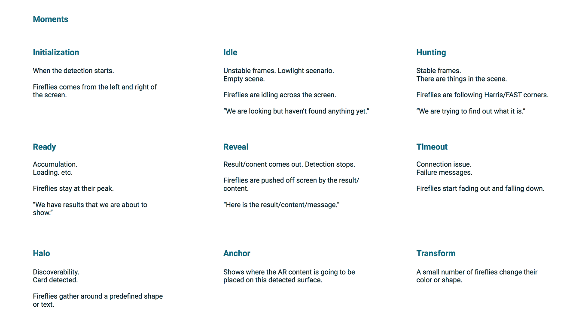
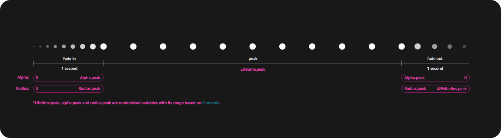
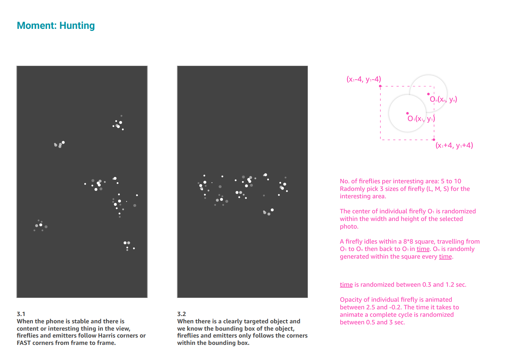

Fireflies, A Visual Language for Visual Search
Initiated this project in 2017 while I was at Amazon. I was the solo designer on this project.
Problems on the live camera UI at that time
1st: Live camera search uses blue dots to indicate what the model is paying attention to. However they don't guide customers to achieve a successful scan.
2nd: Other camera features on Amazon Shopping were all using their own language to talk to our customers, which forced our customers to learn a new language every time they use a different camera feature.

My goal is to
- Release the full potential of the dots as a visual language to guide users through the experience.
- Bring design consistency to all camera related features across Amazon Shopping with this new visual language.
...and I called this visual language Fireflies.
The making of Fireflies
I started by diving deep into the customer flows for each feature, then worked with scientists and engineers who built our engine to break the flows down into small moments. For each moment, I listed out the messages we should convey to customers. Based on the definition of the moments and the messages needed to be conveyed, I defined the fireflies behaviors. Since I planned to standardize them, I gave each of them a name.

Behavior of an individual firefly:

Behavior as a group:

Redesigning camera search
I then used these moments to redesign the camera search feature.
This is how camera features across the board look like when fireflies are implemented: